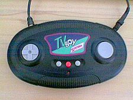
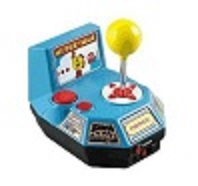
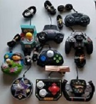

The Plug 'N' Play console was my favorite source of gaming before I was introduced to my first stationary game console, the Nintendo GameCube. At the time, when it came to video games, I was one of those old-school gamers that would ALWAYS beg to play that one arcade cabinet that either had multiple NAMCO games in 1 or the other cabinet that only had Ms. Pac-Man and Galaga built in it.
Plug 'N' Play Consoles began in the early 1990's with their first mobile console: the "TV Boy" which was just a 512 KB ROM containg specifically 128 Atari Games. The Plug 'N' Play category as a whole reached it's peak with mobile consoles containing NAMCO-Licensed classics such as Ms. Pac-Man, Galaga, Rally-X and Xevious. It was now 2005 and the Plug 'N' Play business skyrocketed.
  I specifically remember that was one of the only things I could talk about. Asking my parents for these consoles for my birthday, for Christmas and even doing a bunch of chores to save up money to buy these. By age 12, I have collected 8 of these Plug 'N' Play consoles.
.jpg)
My childhood toy--or toys considering I collected them--were the Plug 'n' Play consoles that reigned the gaming age in the early 2000's released by Namco, Jakks Pacific and HotGen.
Images © Namco, Reddit, Ebay, Wikipedia, Product © Jakks Pacific, Audio © Originally composed by Hans Zimmer